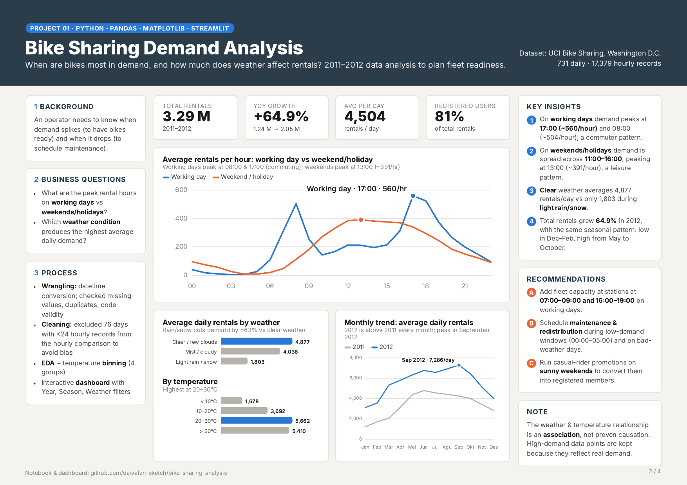

PROJECT 01Python · Pandas · Matplotlib · Streamlit
Bike Sharing Demand Analysis
Analyzed two years of Washington, D.C. bike-share data to understand demand by hour, day type, season, and weather—then translated patterns into fleet-readiness recommendations.
3.29MTotal rentals
+64.9%Year-over-year growth
17:00Working-day peak